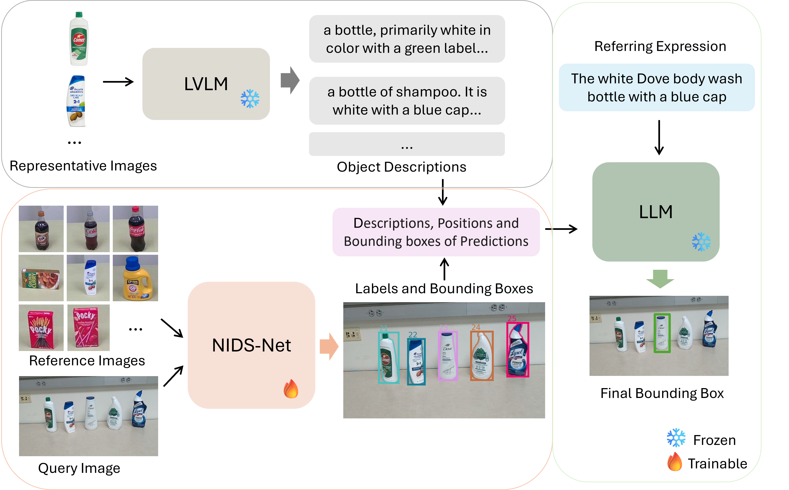

Visual grounding focuses on detecting objects from images based on language expressions. Recent Large Vision-Language Models (LVLMs) have significantly advanced visual grounding performance by training large models with large-scale datasets. However, the problem remains challenging, especially when similar objects appear in the input image. For example, an LVLM may not be able to differentiate Diet Coke and regular Coke in an image. In this case, if additional reference images of Diet Coke and regular Coke are available, it can help the visual grounding of similar objects.
In this work, we introduce a new task named Multimodal Reference Visual Grounding (MRVG). In this task, a model has access to a set of reference images of objects in a database. Based on these reference images and a language expression, the model is required to detect a target object from a query image. We first introduce a new dataset to study the MRVG problem. Then we introduce a novel method, named MRVG-Net, to solve this visual grounding problem. We show that by efficiently using reference images with few-shot object detection and using Large Language Models (LLMs) for object matching, our method achieves superior visual grounding performance compared to the state-of-the-art LVLMs such as Qwen2.5-VL-7B. Our approach bridges the gap between few-shot detection and visual grounding, unlocking new capabilities for visual understanding.
Comparison of three visual grounding tasks: (a) Visual grounding identifies objects in a query image based on a textual expression. (b) In-context visual grounding utilizes reference images to specify the target object in addition to the language expression, where the reference images must contain the target object. (c) Multimodal reference visual grounding uses a set of reference images alongside a referring expression to identify the target, where the target only represents one object in the reference images.

MRVG-Net is our proposed framework for Multimodal Reference Visual Grounding (MRVG).
Architecture of our MRVG-Net. Only the weight adapter of NIDS-Net [1] is trained using the reference images. After the NIDS-Net produces detection results in a few-shot fashion, the corresponding object descriptions are retrieved from a pre-stored file. The Large Language Model (LLM) then matches these descriptions with the referring expression to select the most relevant description and its associated bounding box.

The code for MRVG-Net.
Lu, Y., Guo, Y., Ruozzi, N. and Xiang, Y., 2024. Adapting Pre-Trained Vision Models for Novel Instance Detection and Segmentation. arXiv preprint arXiv:2405.17859.
Send any comments or questions to Yangxiao Lu: yangxiao.lu@utdallas.edu
This work was supported in part by the DARPA Perceptually-enabled Task Guidance (PTG) Program under contract number HR00112220005.